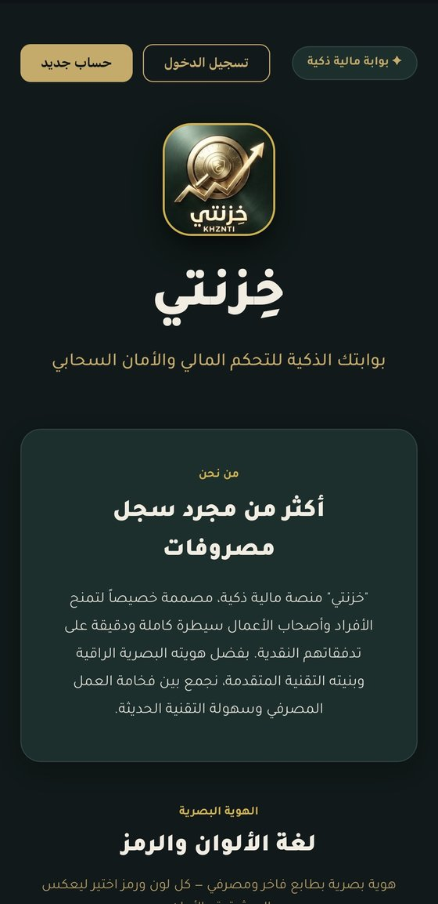
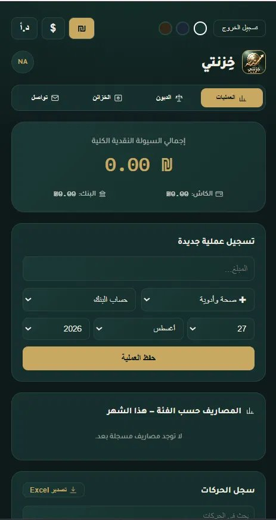

بنحوّل الأفكار ومشاكل الشغل لمنتجات رقمية حقيقية — من مواقع وتطبيقات ويب لـ MVPs.
كل مشروع بيبلش بمشكلة. بنفهمها الأول، بنلاقي أبسط حل مفيد، وبعدين بنبني المنتج الرقمي الصح حواليها.
أغلب المشاريع الرقمية بتبلش بلستة مزايا. إحنا بنفضل نبلش بمشكلة. بأثر، بنساعد رواد الأعمال والشركات يحوّلوا الأفكار والمشاكل الحقيقية لـمنتجات رقمية مفيدة — مبنية حوالين اللي فعلاً مهم.
مش متأكد شو محتاج بالضبط؟ ولا يهمك، بنساعدك تحددها.


أصحاب المشاريع الصغيرة تايهين بمصاريفهم اليومية، وما في أداة عربية بسيطة تعطيهم صورة واضحة عن وضعهم المالي.
بدل تطبيق معقّد بكل الميزات، بنينا أصغر نسخة ممكنة تشتغل فعليًا: تسجيل دخول حقيقي، رصيد، وتصنيفات — بس.
تطبيق حقيقي، متصل بسحابة فعلية، كل مستخدم يشوف بياناته الخاصة بس — جاهز يستخدمه ناس حقيقيين اليوم.
قررنا نبني موقعنا بنفس المعايير يلي منلتزم فيها لعملائنا — مش أقل.
بنيناه ثنائي اللغة فعليًا — مش بس ترجمة نص — مع SEO حقيقي وهوية جاهزة عالميًا.
نفس الموقع يلي عم تتصفحه هلق — دليل حي إنه أثر بيطبق يلي بيوعد فيه.
نفهم المشكلة، المستخدمين، والهدف.
نبسّط الفكرة لأصل الشي المهم بس.
نصمم ونطوّر أول نسخة مفيدة.
نحطها قدام مستخدمين حقيقيين.
نتعلم، نحسّن، ونبني يلي بعده.
بيعتمد على الحجم — موقع بسيط ممكن ياخد أسبوع لأسبوعين، وتطبيق ويب متكامل شهر لشهرين. منحدد الجدول الزمني الحقيقي بعد ما نفهم المشروع بالضبط.
إيه أكيد. كل الشغل عن بعد، منحكي عربي أو إنجليزي، ومنرتب أوقات التواصل حسب فرق التوقيت.
التسعير حسب المشروع مش بالساعة — منحدد سعر ثابت بعد ما نفهم نطاق الشغل بالضبط، بلا مفاجآت ولا رسوم خفية.
حسب احتياج المشروع — مواقع بسيطة بـHTML/CSS/JS خفيف، وتطبيقات حقيقية بـReact وSupabase منشورة على Vercel.
إيه — وهاد بالضبط الفرق يلي بنحكي عنه. بنبني مشاريع تضل شغالة، مش بنسلم ونختفي. تواصلوا معنا أي وقت بعد الإطلاق.